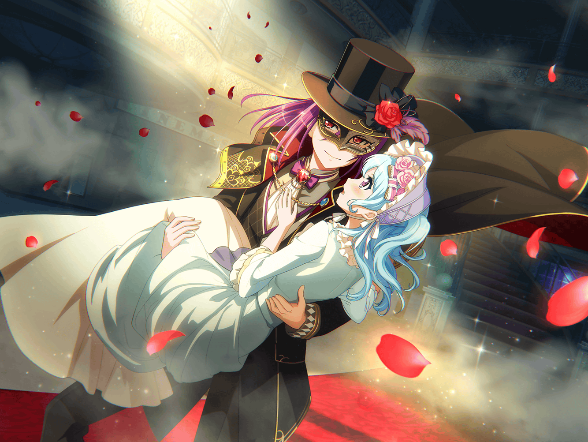

薫
いい休日だ。
小鳥達の歌声が響き渡り……
優しい風がそよぐ
薫
こんな休日には、可愛らしい子猫ちゃんと
逢瀬を重ねるのも悪くないかもしれないな……
薫
ん？
あれは……
薫
やあ、囚われの姫君。
ご機嫌いかがかな？
花音
あ、薫さん。
囚われの姫君って……
薫
ああ、なんでもないよ。
それで？ こんなところでボーッとして、
どうしたんだい？
花音
このカフェでお茶していこうと思って、
メニューを悩んでいたの。
コーヒーと紅茶どちらにしようかなって
薫
そういうことなら、先日のお詫びにご馳走させてもらうよ
花音
お詫び……
薫
続きは中で話そう。
さあ、どうぞ、子猫ちゃん

羽沢珈琲店
花音
あの、薫さん。
お詫びって、もしかして……？
薫
ふふ、君の予想通りだと思うよ
花音
やっぱり、怪盗さんは薫さんだったんだね
花音
あの、実は声に聞き覚えがあって……
演技がすごく上手だったし、私を解放してくれたときに
子猫ちゃんって言ってたし、薫さんなのかなって
花音
でも、薫さんが怪盗になる理由もわからなかったから、
確信が持てなくて……
花音
どうしてあんなことを……？
薫
船に乗る前に、ちょっとしたサプライズを頼まれてね。
船旅にちょっとしたスパイスを仕込んでみたんだよ
花音
そうだったんだ。
でも、どうして私をさらったの？
薫
花音が一番、私が考える『囚われの姫』の役に
当てはまってたから、かな？
薫
考えてごらん？
他のメンバーだったら、
あんなにうまいこといかなかったと思うよ
薫
こころやはぐみは大人しくしてないし、
きっと大騒ぎして、逃げ出そうとしただろうね
花音
た、確かにそうかも……
薫
だろう？
そんなことになってしまっては興ざめだ
薫
というわけで、今日は怪盗からお詫びをしたいから、
好きなものをなんでも頼むといい
花音
なんでもって言われると困っちゃうな。
どうしよう……
薫
花音のおすすめはなんだい？
花音
ここのケーキは全部おすすめなの！
だから選べないんだけど……
薫
ふふ、さすがに全部は無理だね。
まあ、ゆっくり選んでいいよ
花音
ありがとう、薫さん
花音
あの、でもお詫びしてもらうのは……
申し訳ないよ
花音
だって薫さんは頼まれただけでしょう？
薫
だとしても、
私が花音をさらったことには変わりないからね
花音
で、でも……
薫
ふむ……では、お詫びという言葉が引っかかるなら、
お礼に言葉を変えようか？
薫
船上という場で怪盗を演じられた。
最高のステージと最高の役者たちの中で演技することができて、
私は心の底から楽しかったんだ
薫
そのお礼として、ご馳走させてくれるかい？
花音
最高の役者？
薫
そうだよ、花音の役も、こころやはぐみ達の役も
みんなぴったりだった
薫
あんなにも役がはまる舞台はなかなかないからね
花音
ふふ、そうだね。
こころちゃんとはぐみちゃんの探偵役……って、
言っていいのかな？ すごく似合ってたもんね
薫
ああ、演劇の世界でもなかなかない。難しいよ。
あんなにも役にぴったりなキャスティングができるのは
薫
あの船上の舞台は今までの演劇人生の中でも
１、２を争う最高の舞台だった
薫
美咲の、探偵助手役も素晴らしかったし、
花音、もちろん君のお姫様役も最高だったよ。
時折、不安そうな表情を見せるのがたまらなかった
花音
そ、そんな、私は別に……
薫
あの配役だったから、みんな、
それぞれの役になりきれたし、シナリオもうまくいったんだ
薫
また、このメンバーで素晴らしい演技ができることを
楽しみにしているよ